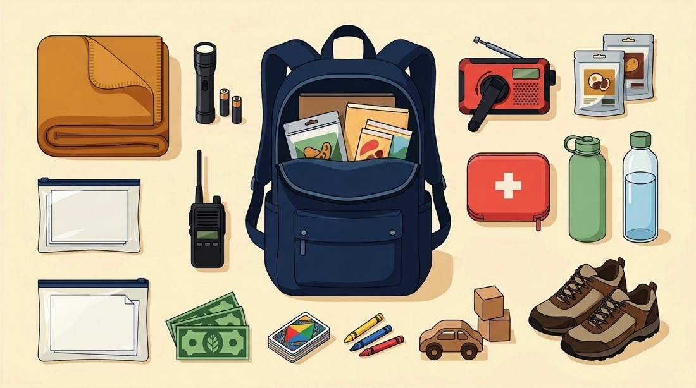
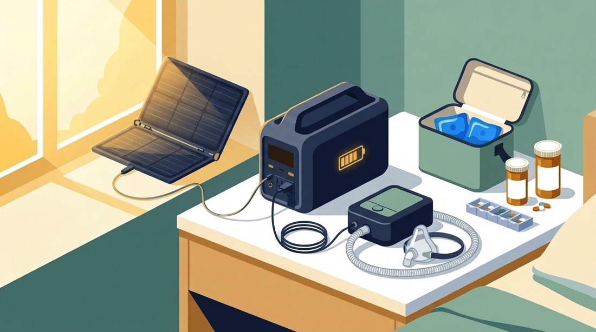

Emergency Lifelines (West of Jordan River First)
Start Here:
Individual & Family Self-Reliance
Every household sustains itself first (General Handbook 22.1.4) so help reaches those in acute danger. Build gradually without debt—start with a $0–$20 closet kit and a printed Form M-1 on your fridge.
Ward & Ministering Network
Bishoprics, Elders Quorums, and Relief Societies partner equally (GH 22.6.2) to check 100% of households via ministering + street blocks, prioritize extra-care neighbors (Form W-1), and solve needs locally first.
Stake Command & Matching
Stake Presidency, High Council Tracks 1–4, Stake RS, and Stake Prep Rep match unmet anonymized Ward needs (Form W-5), inspect buildings before entry (GH 35.5.5), and link to City EOC & Bishops' Storehouse.
"Do I Act Right Now?" — 15-Second Decision Tree
Gas smell, fire, injury, oxygen <2 hrs, or Hazmat plume?
ACT NOW: Call 911, evacuate upwind (renters never hunt locked mains), or seal interior room with HVAC OFF.
Active shaking, 50+ mph wind, downed wires, or dark/icy roads for seniors?
STAY PUT: Shelter indoors, protect warmth & water. Seniors/solo adults: never climb dark stairs or valves alone.
Weather warning, outage <2 hrs, smoke, or Saratoga View advisory?
TEXT ONLY: Prep kits, check neighbors by text. Seniors & car-less: relocate early before dark or snow.
Quake M5.0+, blackout >2 hrs in extreme cold/heat, bridge cut, or evac?
LAUNCH: Homes use Form M-1 (Green/Yellow/Red). Leaders open W-0 / S-A, check W-1 homes, send W-5 at T+60m.
Unified 3-Level Activation Trigger & Authority Matrix
| Level & Objective Triggers | Check-In Mode Rule | Member Action (Family / YSA / Senior) | Ward Action (Bishop / EQP / RSP) | Stake Action (SP / HC / RS / Prep) |
|---|---|---|---|---|
| Level 1 — Watch Severe weather warning; Red Flag / Blizzard Watch; outage <2 hrs; smoke; Saratoga View advisory |
Phone / Text Only (Zero foot sweeps) |
Check 72-hr kit, charge devices, verify oxygen/battery reserve & text neighbors. Seniors / No-Night-Drivers / Car-Less: leave early before dark or snow. | Bishop/EQP/RSP sync by text; spot-check SN-1, SN-2, SN-7 & car-less/senior homes; alert Ward Clerk. | Stake Pres puts HC Facilities & Care Center on standby; monitor Saratoga Springs City & Utah County Emergency Mgmt. |
| Level 2 — Partial Outage >2 hrs in <32°F or >90°F; localized wind/flood; boil-water order; Saratoga View generator/evac alert |
Phone/Text First; Targeted buddy check only if outdoor travel is safe |
Stay home unless ordered to evacuate; oxygen <2 hr reserve = call 911 immediately; offer private host home (welcoming families, singles & pets). | Autonomous Launch: Targeted W-1 checks; PPE work crews (W-2/3); send anonymized Form W-5 at T+60m to Stake Command Intake. |
Stake Pres evaluates daytime warming hub (GH 35.5.5) after HC 10-pt building pass; Care Center HC mobilizes 2 pre-assigned adjacent wards; Stake RS matches host/cooling pools. |
| Level 3 — Auto-Activate M5.0+ earthquake; Jordan River bridge cut; multi-hour cell/power blackout; mandatory evac; SR-68 hazmat; SP call |
Hard Shelter-in-Place during active hazard → Buddy Foot Sweep (W-4 Street Captains) once civil All-Clear |
Home First (homeowners: gas off only if smelled; renters: evacuate upwind; seniors: no dark stairs/valves); post window code; commuting spouse uses Stay-vs.-Walk rule; SA 11th YSA uses nearest-hub fallback if comms out >2 hrs. | Auto-Activate: Rally at outdoor/home Ward Command (W-0); sweep W-4 onto W-4/6 board; relay W-5 via HAM or Ward FRS Ch 1–7 at T+60m & T+4h; offline fast-offering relief. |
SP (or 1st/2nd Counselor west of river) opens Bldg 1 or Shay Park mobile kit; Prep Rep runs 145.230 MHz Net Control (single W-5 intake); SP contacts Area Seventy/FM & enforces Media guardrail. |
5 Stake Sites & Mandatory Policy Guardrails
| Site & Address | Assigned Units / Role | Critical Local Note |
|---|---|---|
| 1. Aspen Hills Stake Center (Bldg 1) 368 W Aspen Hills Blvd |
Aspen Hills, Shay Park, Harvest Hills 10th, SA 11th (YSA) • Primary Stake Command | Wait for HC 10-pt inspection + SP authorization before entering (GH 35.5.5). Portable 12V HAM staging; zero bulk storage. |
| 2. Harvest Hills Meetinghouse (Bldg 2) 270 W Harvest Hills Blvd |
Harvest Hills 1st, Harvest Hills 8th, Crossroads • Secondary Hub & Saratoga View Fallback | Wait for HC 10-pt inspection + SP authorization before entering. |
| 3. Shay Park Pavilion & Field 516 W Aspen Hills Blvd (0.2 mi W) |
Open-Air Alternate Command, Outdoor Triage & Helicopter LZ | Immediate fallback if Bldg 1 is red-tagged; uses off-site Stake Go-Binder & 12V mobile HAM/lighting kit. |
| 4. Riverview Elementary School 273 W Aspen Hills Blvd (385-579-7355) |
Alpine School District Student-Parent Reunification Hub | Walk (don't drive into gridlock), bring Photo ID, pre-list 2 local neighbors in Skyward. Never drive here during SR-68 Hazmat. |
| 5. Saratoga View Senior Living 1429 N Utah Cottage Dr (385-430-1020) |
Riverview Branch (74–100 bed Licensed Assisted Living & Memory Care) | Facility holds exclusive medical/evacuation custody. Church provides pastoral care & adjacent-ward volunteers strictly under nursing direction. |
GH 35.5 / 35.5.5): HC inspects/recommends only; only Stake Presidency opens daytime warming hubs; Area Presidency + FM approve overnight shelter (if comms fail in lethal cold, SP opens for life safety and reports immediately when comms restore); zero firearms on Church property.
(2) Priesthood Keys (GH 22.6.1 / 29.2): Only Bishops authorize Bishops' Storehouse orders & fast offerings; only the Stake President cancels Sunday meetings or authorizes home sacrament.
(3) Media, Legal & Risk: Only the Stake President (with Area Communication) speaks to media/public officials; no MOUs signed without Church Legal; report injuries on Church property or structural damage immediately to FM & Church Risk Management.
(4) Privacy & Abuse (GH 22.4.5 / 38.6.2): Zero member names at Stake level; never record domestic abuse on Form W-1 (call 911 / Bishops & SPs use Abuse Help Line 1-800-453-3860; anyone may call Utah DV Link 1-800-897-5465).
Emergency Right Now: First 60 Minutes (Offline Fridge Card)
1. Shelter vs. Evacuate (4 Instant Triggers)
- Earthquake: Drop, Cover, Hold. Stay home unless structurally damaged or gas leaking.
- Wildfire (Lake Mountain): Evacuate NORTH toward SR-73 in 15 min. Seniors / No-Night-Drivers / Car-Less: leave early on Wildfire Watch before dark.
- Hazmat Plume (SR-68 / Redwood Rd): SEAL INDOORS immediately. Turn HVAC/fans OFF; wet towels under doors. Do NOT drive to Riverview Elementary.
- Winter Freeze / Blackout: Move to 1 interior warm room. Generators 20+ ft outside (never indoor fuel heaters/grills). Protect insulin from freezing.
DO NOT TRY ALONE (Seniors & Solo Adults)
- No dark stairs or outdoor gas/water valves (hip-fracture risk — wait for daylight or Ward buddy).
- No night or snow driving — evacuate early before storms or wait for your Ward ride.
- No indoor camp stoves, charcoal, or propane heaters (carbon monoxide kills silently).
2. First 60 Minutes (Offline Checklist)
- Shoes & Light First: Put on sturdy shoes, grab flashlight/glasses/hearing aids, check household & rescue meds (inhalers, EpiPen, insulin, O2 tanks).
- Gas Safety (Know Your Housing Type):
- Homeowners: Turn gas OFF ONLY if you smell rotten eggs, hear hissing, or dial spins (¼-turn crosswise to pipe).
- Apartment / Townhome Renters: NEVER hunt locked HOA mains — smell gas? Evacuate upwind immediately, knock on hallway doors, call landlord & Enbridge outside.
- Basement Renters (Hazmat): Move to pre-arranged upstairs landlord/neighbor room or seal highest interior room (HVAC OFF).
- Water & "DO NOT FLUSH": After a quake or sewer outage, do NOT flush. Line your dry toilet bowl with two heavy trash bags + kitty litter/shavings, drop seat to hold bags.
- Flag Your Window & Check Next Door: GREEN = Safe (48h water/warmth) · YELLOW = Safe now, need help (low water, stranded spouse, warming insulin, no heat) · RED = Urgent danger / 911.
- Don't Drive to the Church First (
GH 35.5.5): Chapels stay closed until inspected & approved by the Stake President. Wait for a Ward runner, text, or listen 5 min at the top of the hour (:00) on your Ward walkie-talkie channel (Wards 1–7 = FRS Ch 1–7, Tone 0). - SA 11th YSA / Solo Renters: If phones stay dead >2 hours and no YSA companion reaches you, knock on immediate neighbors or walk (if safe, daylight, non-hazmat) to your nearest hub (368 W Aspen Hills, 270 W Harvest Hills, or Shay Park) — Stake Command will relay your safety to the SA 11th Bishop.
Household Contacts, Reunification, 2-Min How-Tos & Neighbor Care Slip
Verified Local Lifelines (Keep Offline)
- ER (West of River): Intermountain Saratoga (801) 763-3500 (392 W Medical Dr)
- Pediatric ER: Primary Children's Miller Campus (385) 531-1200
- Poison Control: 1-800-222-1222 · Gas Leak (Enbridge): 1-800-767-1689
- Power (RMP): 1-877-508-5088 · City Water Urgent: (801) 404-2468
- Mental Health / Domestic Violence: Call/Text 988 · Utah DV Link 1-800-897-5465
- Storehouse / Home Storage / DI: (801) 436-8205 / DI (801) 436-8210
2-Minute Micro-How-Tos
- Gas Valve (Homeowners): Turn ONLY if smelled/hissing/spinning. Flat bar ¼-turn crosswise = OFF. Never turn back on yourself.
- Drain Water Heater (40–50 gal): (1) Shut off breaker/gas to heater; (2) Close top cold-water valve; (3) Open an upstairs hot tap for air; (4) Drain clean water from bottom spigot.
- Safe Insulin (36–46°F): Wrap vial in a towel between vial & cool pack — direct ice freezes and ruins insulin! In winter blackouts, keep inside warm room or inner coat pocket.
- Bridge Rule (Commuters): If SR-73/2100 N bridges look cracked or closed, do NOT cross. Shelter east of river, text out-of-area relay; walk only if <5 mi, daylight, safe air.
Privacy Lock (GH 22.4.5): 100% voluntary. We record only functional support needs—never medical diagnoses. Kept strictly in a locked offline Ward binder (never emailed/posted) and shredded when you move or leaders change.
Name / Apt or Street: ____________________________ Phone (Landline/Cell): ____________________
Helpful Check-In Support: [ ] Medical Power (O2/CPAP) [ ] Refrigerated Meds [ ] Hard of Hearing / Low Vision [ ] Landline-Only [ ] No Night/Snow Driving or Car-Less Ride [ ] Infant/Solo/Postpartum [ ] Pet Needs Carrier
Ways I Can Help Neighbors: [ ] Phone Check-In Buddy [ ] Pray / Notes [ ] Host Neighbor (Main-Floor / Pet-OK) [ ] Bilingual: __________
My Medications, Allergies & Medical Contacts (15pt Card)
Name: ______________________________ DOB: ______________
Adult Child / Emergency Contact: ________________________________________
Ward Buddy / Ministering Contact: ________________________________________
Doctor & Pharmacy Phone: ________________________________________
Oxygen / DME Supplier 24/7 Phone: ________________________________________
Allergies (Meds / Food): _________________________________________________
| Medication Name | Dose & Time | Needs Fridge? |
|---|---|---|
| [ ] Yes | ||
| [ ] Yes | ||
| [ ] Yes | ||
| [ ] Yes | ||
| [ ] Yes | ||
| [ ] Yes |
ER West of River: Intermountain Saratoga (801) 763-3500 · Gas: 1-800-767-1689 · RMP: 1-877-508-5088 · 911 for O2 <2 hrs
Medical Power & Medication Reality Check (Read Before an Outage)
- Rocky Mountain Power Medical Certificate is NOT Backup Power: Enrolling in the RMP Medical Certificate Program helps protect against non-payment disconnection and provides courtesy notice of planned outages—it does NOT guarantee uninterrupted electricity or priority storm restoration.
- Oxygen Concentrator Users: Request backup compressed-oxygen cylinders from your DME supplier today. If power fails and your backup reserve drops under 2 hours, call 911 immediately (never wait for a 2-hour Ward check-in).
- Medicare Part D & 2–3 Week Refill Buffer: Ask your pharmacy for 90-day fills, refill consistently on Day 25 of a 30-day cycle, or ask about a once-yearly vacation/disaster override to keep a small buffer on hand.
- Dual-Season Insulin Rule: Summer coolers must stay 36–46°F with a towel between vial and cool pack (direct ice freezes & ruins insulin). Winter blackouts also freeze insulin—keep vials in an interior warm room or inner pocket. (Most opened, in-use insulin stays safe at room temp up to 28 days—verify your label.)
Kids, Commuters & Pets
- School Pickup: Add 2 local neighbors as Authorized Pickups in Skyward today. Walk if roads jam; bring Photo ID.
- Jordan River Commuter Car Kit: Sturdy walking shoes, water, snacks, warm layer, phone bank, paper map. Follow the Stay-vs.-Walk bridge rule.
- Water & Pets: Plan 1 gal/person/day + ~1 gal/day for a large dog + infant formula margin. Ask Ward hosts upfront about pet-friendly rooms.

Young & Single / SA 11th / RenterSmall Space, Renters & Roommates
- 1-Shelf Prep: Store 1-gal water jugs under your bed + no-cook HOA-safe food (peanut butter, tuna, protein bars) + compact UVU/BYU/UTA backpack kit.
- Renter Utility Rule: Know your unit's breaker/water valve or landlord 24/7 policy—never hunt locked HOA gas mains. Check renter's insurance Loss-of-Use (ALE) coverage.
- Solo & Car-Less Safety: Pick a daily text "sick-day buddy." Need a wildfire evac ride? Check the box on the Neighbor Care Slip. Update Member Tools every semester (Aug/Jan/May).

Senior Citizen (70+) & Saratoga ViewSafe Lifting, Paper First & Dignity
- Skip 42-lb Jugs: Use easy-lift 1- to 2.5-gal spouted jugs or a $10 hand siphon pump. Never hesitate to ask EQ/RS for heavy lifting, snow shoveling, or card-only Home Storage Center runs.
- Non-Smartphone Friendly: Print the 15pt Large-Print Fridge Card, ask a neighbor/youth to register your landline for voice Everbridge alerts, and hand in the Neighbor Care Slip (you can serve as a phone buddy too!).
- Saratoga View Residents & Adult Children: The licensed facility handles building generators, nursing care, and official evacuation (Harvest Hills warming fallback). Families should keep a labeled glasses/hearing-aid/comfort pouch on hand and keep emergency contacts current with the nursing desk.
4-Weekend Quick-Start & $20 "Shop-Your-Closet" Track
Preparedness is built peaceably without debt (GH 22.1.4). Start right where you are:
- Weekend 1 (30 min, $0): Fill & print Form M-1; verify Member Tools (or tell your Ward Clerk on paper); sign up for Utah County / Saratoga Springs Everbridge Alerts (beready.utah.gov or ask a youth/neighbor to enroll your landline); locate your unit's shutoffs or landlord 24/7 number.
- Weekend 2 (Water First): Store 3 days of drinking water (1 gal/person/day + pets), then build toward 14 days. Homeowner bonus: your 40–50 gal water heater holds clean emergency water.
- Weekend 3 (No-Cook Pantry): Shop your normal groceries + 1–2 extra cans/week. For affordable 30-year basics, visit the Saratoga Springs Home Storage Center (142 W Medical Dr, 801-436-8205 — card only, no AmEx; ask EQ/RS if you need help with card checkout or lifting #10 cans): Order Form PDF (EN) · Español PDF.
- Weekend 4 (Grab Bag & Practice): Toss sturdy shoes, flashlight, meds list, warm socks, copies of IDs, and $20–$50 small bills into a backpack.
$20 Starter Kit ("Shop Your Closet")
- Already at home ($0): Backpack, warm coat/socks, shoes by bed, canned food + manual opener, heavy trash bags (for existing-toilet emergency sanitation), copies of IDs/Rx.
- Under $20 total: 6–8 one-gallon water jugs (~$8), LED flashlight + AA batteries (~$5), unscented liquid bleach or water drops (~$3), duct tape + nitrile gloves (~$4).
Light Practice Rhythm (Twice a Year at Daylight Saving Time): Check flashlight/smoke-alarm batteries, rotate snacks/water, and confirm your printed Form M-1 contacts. Official Church guides: Self-Reliance & Emotional Resilience · Utah Area Temporal Prep Guide PDF.
Household Readiness Checklist (Saves Automatically on This Device)
Tier A: 30-Day Quick Wins (10 Fast, $0–$20 Steps)
Tier B: Steady Growth (4 Longer-Term Goals, 6–12 Months)
Don't wait for a community disaster. Call or text your Relief Society President, Elders Quorum President, or Bishop privately, or reach 988, 211 Utah, jobs.utah.gov, or Church Employment.
Ward Action Binder — 5 Self-Contained Printable Sheets
Everything Bishops, EQPs, and Ward RSPs need offline at 2:00 AM—zero cross-tab hunting. Keep locked off-site binders with Bishop, EQP, RSP, EQ 1st Counselor & RS 1st Counselor.
Ward Command Quick Sheet, Succession & Field Reference
Form W-0: Activation, Succession & First 30 Minutes
Autonomous Ward Activation: The Bishop—or EQP + Ward RSP acting jointly if the Bishopric is unreachable—may immediately launch Level 2/3 household check-ins, PPE work crews, private host homes, and offline fast-offering relief.
Ward Succession Order: Bishop → 1st Counselor → 2nd Counselor → EQP & Ward RSP jointly.
Stake/Area Hold Fence: Never open chapels without HC 10-pt inspection + Stake Presidency authorization (GH 35.5.5; Area Pres+FM for overnight). Only Stake Pres cancels Sunday meetings / authorizes home sacrament (GH 29.2).
- Min 0–10: Secure own household. Confirm Check-In Mode (Phone/Text vs. Foot Sweep vs. Hard Shelter-in-Place).
- Min 10–20: Rally at Outdoor/Home Ward Command (below) if chapel is uninspected. Open locked binder (
W-1,W-4/6). - Min 20–45: Dispatch
W-4Street Captains (prioritize SN-1, SN-2, SN-3, SN-5, SN-7 onW-1). Log counts onto sharedW-4/6board. - Min 45–60: Solve local needs first (EQ crews + RS host homes/porch drops). Transmit anonymized Form W-5 at T+60m & T+4h to Stake Command Intake (
145.230 MHz/ Ward FRS Ch).
Offline Command Roster & Rally Point
| Outdoor / Home Ward Rally Point | |
|---|---|
| Bishop / 1st / 2nd Counselors | |
| Ward Clerk & Exec Secretary | |
| EQ Pres & EQ 1st Counselor | |
| Ward RS Pres & RS 1st Counselor | |
Ward Welfare Specialist (22.6.4) | |
| Ward HAM Operator / Call Sign | |
| Stake Pres Cell & Assigned HC |
GH 22.6.1):
Only Bishops hold Storehouse & fast-offering keys. If LCR/phones fail: (1) Draft commodity list with RS/EQ; (2) Sign paper Bishop's Order & relay via HAM/runner to Saratoga Springs Storehouse (142 W Medical Dr, 801-436-8205); (3) For urgent cash/card emergency relief, keep itemized receipts for post-outage LCR reconciliation.
Form W-0B (Back of Sheet 1): Self-Contained Ward Field Reference
- SN-1 (Medical Power): O2/CPAP/dialysis. RMP Medical Cert is NOT backup power; O2 <2h reserve = call 911 immediately.
- SN-2 (Refrigerated Meds): Insulin/biologics. Cool packs 36–46°F wrapped in towel (never direct ice); protect from winter freezing. Joint EQ+RS hub only after HC building pass.
- SN-3 (Mobility / Car-Less): Walkers, wheelchairs, non-night drivers, car-less renters needing wildfire evac ride.
- SN-4 (Dialysis / Chronic): Priority culinary water & road access.
- SN-5 (Solo / Isolated): Widows, seniors, & solo young adults living alone.
- SN-6 (Sensory / Cognitive): Quiet room option; calm buddy check.
- SN-7 (Infants / Expectant / Postpartum / Solo Parents): Formula, safe water, diapers, extra check-in if spouse is east of river.
- SN-8 (Language, Deaf/HoH & Low-Vision): Bilingual interpreter + in-person door knock, large-print paper flyers & landline voice Everbridge alerts.
GH 38.6.2): 1-800-453-3860.
- Welcome families, displaced single renters, non-member roommates & pets (confirm allergies/carriers upfront).
- Match main-floor bedroom/bath for seniors or mobility limits (SN-3).
- Verify host has working heat/power/water & set a 48–72 hr check-in window.
- Porch drops (Disease/Quarantine): zero entry, text/knock & step back 15 ft.
- Zero group-chat gossip—keep host/guest details strictly confidential (
GH 22.4.5).
- Always 2-person buddy pairs; stand down after windstorms until gusts <25 mph.
- Zero youth on chainsaws, roofs, or ladders; no lone ladder work; no wet/icy/steep roofs.
- Mandatory chainsaw PPE: chaps, helmet, eye & ear protection.
- Zero entry into visibly cracked or gas-smelling homes; stay 35+ ft from downed lines until RMP confirms de-energized.
SA 11th YSA Addendum: Sync rosters 3×/yr (Aug/Jan/May) by apartment complex/zip. In >2-hr blackouts, YSAs check in at nearest hub (Bldg 1, Bldg 2, or Shay Park); Stake Command relays counts back to SA 11th Bishop.
Riverview Branch (Saratoga View): Pastoral/emotional support only—do NOT collect Form W-1 medical records duplicating licensed nursing files.
Voluntary Extra-Care Household Register (GH 22.4.5)
GH 22.4.5 & 38.6.2):
(1) Record functional support needs only (never medical diagnoses); (2) NEVER record abuse or domestic safety concerns on Form W-1—handle exclusively in private Bishopric pastoral confidence (911 if immediate danger; Bishops call Abuse Help Line 1-800-453-3860; Utah DV Link 1-800-897-5465); (3) Never email/text this sheet; shred superseded copies & upon calling release.
Easily Missed: Oxygen/CPAP, insulin, expectant/postpartum moms, solo parents w/ commuting spouse, widows, solo young adults, car-less renters, deaf/HoH, low-vision, landline-only, non-night/snow drivers.
| Household & Street/Apt | Phone (Cell/Landline) | Codes (SN-1..8 / HoH / Car-Less / Solo) | Practical Support Needed (Aux Power? Ride? Knock?) | Assigned Buddy | Consent Date | Checked? |
|---|---|---|---|---|---|---|
| [ ] | ||||||
| [ ] | ||||||
| [ ] | ||||||
| [ ] | ||||||
| [ ] | ||||||
| [ ] | ||||||
| [ ] | ||||||
| [ ] | ||||||
| [ ] | ||||||
| [ ] | ||||||
| [ ] | ||||||
| [ ] | ||||||
| [ ] | ||||||
| [ ] | ||||||
| [ ] | ||||||
| [ ] |
Voluntary Equipment, Trades, Medical & Relief Society Care Pools
Voluntary / No-Obligation Notice: Listing gear, licenses, or willingness to host is 100% voluntary and creates zero legal obligation—families always care for their own household first. Collect via a 2-min Q1 5th-Sunday sign-up (not inside GH 21.3 interviews).
Part A (Front): Voluntary Equipment (Form W-2)
| Category (Matches Tab 4 Pool) | Volunteer Name & Phone | Item / Fuel / Capacity Notes | PPE On-Hand? | Operator-Only vs. Loanable |
|---|---|---|---|---|
| Power Station / Generator (SN-1) | [ ] N/A | [ ] Op [ ] Loan | ||
| Power Station / Generator (SN-1) | [ ] N/A | [ ] Op [ ] Loan | ||
| Chainsaw / Debris Crew | [ ] Chaps/Helm | [ ] Op Only | ||
| Chainsaw / Debris Crew | [ ] Chaps/Helm | [ ] Op Only | ||
| Snow Plow / 4x4 / Trailer / Evac Ride | [ ] N/A | [ ] Op [ ] Ride | ||
| Gravity Water Filter / Sump Pump | [ ] N/A | [ ] Op [ ] Loan |
Part B (Back): Voluntary Skills, Medical & RS Care Pools (Form W-3)
| Skill / Care Pool (Matches Tab 4 Pool) | Volunteer Name & Phone | Details (License / Language / Main-Floor / Pet-OK / Coolers) |
|---|---|---|
| Medical / RN / EMT / Physician | ||
| Plumber / Electrician / HVAC / PEX | ||
| Licensed HAM Operator (Call Sign) | ||
| RS Pool 1: Willing Host Home (Main-Floor / Pet-OK / Singles OK) | ||
| RS Pool 1: Willing Host Home | ||
| RS Pool 2: Bilingual / ASL Interpreter (SN-8) | ||
| RS Pool 3: Loaner Coolers & Ice Packs (SN-2) | ||
| RS Pool 4: Licensed Mental Health / Grief Support |
Dual-Mode Check-In Overlay & Reusable Ward Tally / Dispatch Board
Dual-Mode Rule: When phones/texts work, check in via existing LCR Ministering Districts. During a cell blackout, switch to the 10–12 Geographic Street-Captain Blocks below (maintained quarterly by the Ward Clerk; delegate block tracking to EQ/RS Counselors & RS Service/Activities Coordinators per GH 9.3.3).
Board Split: EQP = Work Crews & Heavy Gear · Ward RSP = SN-1/2/5/7 & Host Homes/Porch Drops · Clerk/Specialist = Master Tally & W-5 Prep.
| Street Block / District | Street Captain (EQ/RS Pair) | Homes | Green | Yellow | Red | Unacct. | W-1 Done? | Time In |
|---|---|---|---|---|---|---|---|---|
| Block 1: | [ ] | |||||||
| Block 2: | [ ] | |||||||
| Block 3: | [ ] | |||||||
| Block 4: | [ ] | |||||||
| Block 5: | [ ] | |||||||
| Block 6: | [ ] | |||||||
| Block 7: | [ ] | |||||||
| Block 8: | [ ] | |||||||
| Block 9: | [ ] | |||||||
| Block 10: | [ ] | |||||||
| Block 11: | [ ] | |||||||
| Block 12: | [ ] | |||||||
| WARD TOTAL (→ W-5 Part 0) | All [ ] |
Active EQ Work-Crew Dispatch & Return Log
| 2-Person Crew & PPE Checked | Address & Task | Out / Back |
|---|---|---|
SN-1 Battery / Generator Loan Log (3-Line)
| Owner Tag & Unit | Loaned To (Street) | Out / Recharge Due |
|---|---|---|
Ward → Stake Anonymized Rollup & Live SITREP (Strictly 1 Page)
Ward Name: ______________________ Date / Time: ____________ Submitted By: ________________
Single Stake Intake Bus: Transmit to Stake Command / Prep Rep Net Control (HAM 145.230 MHz, Tactical 146.580 MHz, Ward FRS Ch 1–7, or runner)—shared live to Stake Pres, HC Tracks 1–4 & Stake RS simultaneously.
Part 0: Live Household Accountability Summary (From Sheet W-4/6)
| Total Homes | Checked | GREEN (Safe) | YELLOW (Help) | RED (Urgent) | Unaccounted | Displaced | Acute Injuries |
|---|---|---|---|---|---|---|---|
Part A: Anonymized Extra-Care Counts (Matches Tab 4 Register 1:1)
| SN-1 Total (Power) | SN-1 No Aux Power | SN-2 (Meds) | SN-3 (Mobility/Ride) | SN-4 (Dialysis) | SN-5 (Solo) | SN-6 (Sensory) | SN-7 (Infant/Mom) | SN-8 (Lang/HoH) |
|---|---|---|---|---|---|---|---|---|
Part B: Voluntary Resource Pools Available to Share / Unmet Needs (1:1 Parity With Tab 4)
| 1. Power / Gen | 2. Saws / Crews (PPE) | 3. Plumb / Elec | 4. Plow / 4x4 / Rides | 5. Water Filters | 6. Host Homes | 7. Med / Lang / HoH | 8. Coolers / Mental Hlth |
|---|---|---|---|---|---|---|---|
| Avail: ___ Need: ___ | Avail: ___ Need: ___ | Avail: ___ Need: ___ | Avail: ___ Need: ___ | Avail: ___ Need: ___ | Avail: ___ Need: ___ | Avail: ___ Need: ___ | Avail: ___ Need: ___ |
Urgent Unmet Needs / Storehouse Requests (Bishop Key Required, GH 22.6.1) / SA 11th YSA Walk-Ins to Relay:
________________________________________________________________________________________________________
Ward Rollout, 10-Min New-Leader Onboarding, Maintenance Loops & 5th-Sunday Teaching Flow ▾
10-Minute New Ward Leader Quick Start
- Min 0–3: Read Ward Sheet 1 (W-0 / W-0B) and the 15-Second Decision Tree on Tab 1. Skip the Hazard Appendix for now.
- Min 3–7 (Calling-Release Handoff —
GH 22.4.5): Outgoing leader hands over the locked offline Ward Binder (5 sheets), walks through activeW-1homes &W-4Street-Captain blocks, and cross-cut shreds all superseded copies immediately. - Min 7–10: Confirm 5 locked off-site binders exist (Bishop, EQP, Ward RSP, EQ 1st Counselor, RS 1st Counselor) and confirm Ward Clerk's quarterly LCR print date.
Low-Friction Maintenance Loops (Zero Burnout)
- Monthly (5 min in Ward Council): Rolling
W-1refresh for new pregnancies, postpartum moms, recent widows, surgeries, and move-ins. - Quarterly (
GH 21.3Interviews): Keep 10-minute ministering interviews strictly focused on people & confidentialW-1care—never clutter interviews with gear surveys. Ward Clerk prints updated LCR districts & flags new move-ins. - Annual Q1 (2-min 5th-Sunday Sign-Up): Pass voluntary
W-2/3sign-up slips during Q1 5th Sunday; submit Form W-5 by March 31 to Stake Prep Rep. (SA 11th YSA: refresh rosters Aug / Jan / May.) - Respect Sunday Curriculum (
GH 8.2.1.2 & 9.2.1.2): Never replace 2nd/4th Sunday General Conference lessons in EQ or RS. Delegate activity nights & porch-drop logistics to RS Service & Activities Coordinators (GH 9.3.3) + Ward Welfare Specialist (GH 22.6.4).
45-Min 5th-Sunday / Activity Night Member Teaching Flow
- Min 0–10 (Peace Over Fear): Hand out printed Form M-1 (keep a 15pt Large-Print stack at the door). Read D&C 38:30 & Mosiah 4:27; review the 15-Second Decision Tree and the
GH 35.5.5chapel rule. - Min 10–25 (Fill One Card Live): Everyone fills out their
Form M-1on the spot. Pair tech-savvy youth with seniors to register phones or landlines for Everbridge alerts. - Min 25–38 (3-Cohort Peer Show-and-Tell — 4 min each):
- Family Parent: Skyward backup pickup + $20 commuter bag + existing-toilet double-liner demo.
- YSA / Renter: Under-bed 1-gal jugs, no-cook food box, landlord 24/7 card, SA 11th >2-hr hub rule.
- Senior (70+): 2.5-gal jug + $10 siphon pump, 15pt Meds Card, towel-wrapped cool pack, Neighbor Care Slip.
- Min 38–45 (One Quick Win): Invite each household to circle one Tier-A Quick Win and drop optional 2-min
W-2/3slips in a basket at the door.
Stake Command Kit — 2 Double-Sided Sheets + Unified Register & Directory
Keep synchronized off-site Stake Go-Binders at home with Stake Pres, 1st/2nd Counselors, HC Comms, Stake RS Pres & Stake Prep Rep (never rely solely on Building 1).
Stake Presidency Command, Succession & HAM/FRS Net Control
Front (Form S-0): Stake Presidency First-Hour & Keys
East-of-River Succession (GH 22.9.1): Stake President → 1st Counselor → 2nd Counselor → Designated High Councilor (physical staging & inspection only; never exercises priesthood keys).
- Min 0–15: Secure own household. Declare Level 2/3 if not auto-triggered.
- Min 15–30 (
GH 35.5.5): Direct HC Track 1 to run 10-pt visual check on Bldg 1 & Bldg 2. Only Stake Presidency authorizes daytime warming hubs; if Bldg 1 fails, shift Command to Shay Park Pavilion with 12V mobile HAM kit. - Min 30–45: Confirm Stake Prep Rep opened
145.230 MHzNet Control (singleW-5intake). Report status to Area Seventy & FM; request Area Presidency + FM approval for overnight shelter (if comms fail in lethal cold, open for life safety and report immediately when comms restore). - Min 45–60: Authorize Sunday meeting changes / home sacrament (
GH 29.2.1.1 / 29.5) if needed; broker cross-ward aid & Bishop-signed Storehouse orders (GH 22.6.1).
Media, Legal & Risk Guardrails: Only Stake President (with Area Communication) speaks to press/public officials. Zero MOUs signed without Church Legal. Report any injury on Church property or structural damage immediately to FM & Church Risk Management. Zero firearms (GH 35.5).
Offline Ecclesiastical & Area Escalation Roster
| Stake Pres / 1st / 2nd / Clerk | |
|---|---|
| Area Seventy & Coordinating Chair | |
| Church FM (24/7) & WSRM | |
| Church Risk Mgmt & Area Comms | |
| Lehi & American Fork Stake Pres | |
| Aspen Hills / Shay Park Bishops | |
| HH 10th / SA 11th YSA Bishops | |
| HH 1st / HH 8th / Crossroads Bishops | |
| Riverview Branch Pres / Stake RS |
Back (Form S-3): Stake Prep Rep / Net Control & De-Conflicted RF Channel Plan
| FRS Ch | Assigned Unit / Site | FRS Ch | Assigned Unit / Site |
|---|---|---|---|
| Ch 1 | Aspen Hills Ward | Ch 7 | Crossroads Ward |
| Ch 2 | Shay Park Ward | Ch 8 | Bldg 1 Library Relay |
| Ch 3 | Harvest Hills 10th Ward | Ch 9 | Bldg 2 Library Relay |
| Ch 4 | SA 11th Ward (YSA) | Ch 10 | Shay Park Alternate Hub |
| Ch 5 | Harvest Hills 1st Ward | Ch 11 | Saratoga View Care Center |
| Ch 6 | Harvest Hills 8th Ward | Ch 12–14 | Stake Tactical / Spare |
- Primary Stake Net:
145.230 MHz(UCARES / Stake Check-In) - City EOC / County Emergency:
147.340 MHz(UCARES / EOC Bridge) - Local Tactical Simplex: Hail on
146.520 MHz, immediately QSY to coordinated Utah County working simplex146.580 MHz(never run working traffic on.520).
- Auto-Check-In: Felt quake ≥M4.5, cell failure >15 min, Everbridge evac/shelter, or >2-hr extreme-weather outage → HAMs check in at
:00 / :30. - W-5 Intake Cadence: Voice/radio SITREP at T+60 min; full
W-5at T+4 hrs; every 12 hrs thereafter. Log all 7 Wards + Riverview status + SA 11th YSA walk-in relays onto one live Master Board shared simultaneously to SP, HCs & Stake RS. - Shay Park 12V Mobile HAM/Lighting Kit Custodian: ________________________ (Backup: ___________________).
High Councilor 4-Track Card, 10-Pt Building Check & Stake RS Welfare
Front (Form S-1): Standardized 4 High Council Tracks & 2-Deep West-of-River Roster
| Standardized HC Track | Primary Lead & West-of-River Backup (Keys?) | Auto-Activation Trigger & Immediate 0–60 Min Duties |
|---|---|---|
| Track 1: Facilities (Bldg 1 & Bldg 2) |
Lead: ________________ Backup (Keys): ________ |
Trigger: Shaking >15s, severe storm, or SP call. Run 10-Pt Building Checklist below; recommend open vs. Shay Park shift to SP (never open unilaterally); verify HVAC shutoff for Hazmat; call FM 24/7. |
| Track 2: Care Center (Saratoga View) |
Lead: ________________ Backup: ______________ |
Trigger: Outage >2h, wildfire evac, or facility alert. Verify Saratoga View status (385-430-1020); mobilize 2 pre-assigned adjacent Wards (Crossroads & Harvest Hills 8th) for wheelchair/perimeter pairs strictly under nursing direction. |
| Track 3: Comms & Logistics | Lead: ________________ Backup: ______________ |
Trigger: Level 2–3 or cell failure. Support Prep Rep on Shay Park 12V Go-Box; broker cross-ward batteries, generators, plumbers, plows, and chainsaw crews from unified Tab 4 Register. |
| Track 4: Public Safety & Civil (incl. Public Works) | Lead: ________________ Backup: ______________ |
Trigger: Everbridge evac/hazmat/water alert. Link to Saratoga Springs Fire, Police, Public Works (801-404-2468), City EOC (147.340 MHz), and Riverview Elementary (385-579-7355). Never commit Church property without SP clearance. |
[ ] 1. Zero rotten-egg gas odor [ ] 2. Exterior walls plumb (no tilt/major diagonal cracks) [ ] 3. Roof/steeple intact [ ] 4. No downed power lines near lot [ ] 5. Main entries/exits unobstructed [ ] 6. Interior ceilings/light fixtures secure [ ] 7. Zero active water leaks/flooding [ ] 8. Electrical/heat safe (no sparking/smoke) [ ] 9. HVAC air-handler shutoff verified (if Hazmat) [ ] 10. Mechanical key/fob & library FRS kit accessible.
Mechanical / Shutoff Notes (Bldg 1 / Bldg 2): Gas Valve: ____________ · Main Water: ____________ · HVAC Switch: ____________
Back (Form S-2): Stake Relief Society First-Hour Card (GH 9.6 / 22.9.3)
- Min 0–15: Secure own household & verify Stake RS counselor backups.
- Min 15–30: Check in with Stake Presidency (text/HAM/runner) before traveling to Bldg 1 or Shay Park.
- Min 30–45: Receive anonymized Ward
W-5welfare/emotional summaries directly from Stake Command Single Intake (do NOT create a parallel check-in channel). - Min 45–60:
- Match cross-ward Host Homes (explicitly welcoming families, displaced single renters, non-member roommates & pets) and coordinate Lehi/AF inter-stake host housing with SP if local capacity fills.
- Launch Joint EQ+RS SN-2 Insulin Cooler Hubs (>4 hr outage in >90°F heat) only after HC Track 1 + SP clear the building; enforce 36–46°F towel-wrapped cool packs — NEVER direct ice.
- Aggregate Ward needs & prepare draft Bishops' Storehouse lists for Bishop / Stake President approval (
GH 22.6.1).
Cross-Ward Need → Resource Matchmaking
Unmet Ward Need (W-5) | Stake Match & Policy Gate |
|---|---|
| SN-1 Power Deficit | HC Track 3 matches loanable battery/gen (if O2 <2h → 911 immediately). |
| SN-2 Insulin Warming | Stake RS + EQ launch FM-cleared cooler hub (36–46°F cool packs, no direct ice). |
| Displaced / Freezing Home | Stake RS matches private host homes first; SP evaluates daytime warming hub (GH 35.5.5); Area Pres + FM approve overnight. |
| Trees / Burst Pipes / Snow | HC Track 3 dispatches vetted PPE work crews, plumbers (PEX), or plows (wind <25 mph). |
| Food / Water / Diapers | Bishops sign paper/phone order to Saratoga Springs Storehouse (801-436-8205, GH 22.6.1). |
| Grief / Trauma / Language | Stake RS pairs licensed mental health & bilingual/ASL volunteers + 988 / LDS Family Services. |
Anonymized Extra-Care Tallies (Left) & Voluntary Resource Pools (Right)
| Unit (FRS Ch) | SN-1 Tot / No Aux | SN-2 | SN-3 | SN-4–6 | SN-7 | SN-8 (Lang/HoH) | 1. Power | 2. Saws | 3. Plumb/Elec | 4. Plow/Ride | 5. Filters | 6. Hosts | 7. Med/Lang | 8. Cool/MH |
|---|---|---|---|---|---|---|---|---|---|---|---|---|---|---|
| Aspen Hills (Ch 1) | / | |||||||||||||
| Shay Park (Ch 2) | / | |||||||||||||
| Harvest Hills 10th (Ch 3) | / | |||||||||||||
| SA 11th YSA (Ch 4) | / | |||||||||||||
| Harvest Hills 1st (Ch 5) | / | |||||||||||||
| Harvest Hills 8th (Ch 6)* | / | |||||||||||||
| Crossroads (Ch 7)* | / | |||||||||||||
| Riverview Branch | Facility Status Only (Zero Resident Medical Files): Power OK? [ ] Evac Needed? [ ] Adjacent-Ward Volunteers Needed? [ ] *(Pre-assigned pool: Crossroads & Harvest Hills 8th) | |||||||||||||
| STAKE TOTAL | / | |||||||||||||
Medical, Public Safety, Utilities, Church Welfare & Support Lifelines
Medical & Trauma (West of River First)
- Intermountain Saratoga Springs ER (West of River): (801) 763-3500 — 392 W Medical Dr (24/7 freestanding ER; zero bridge crossing)
- Westlake Emergency Center (MountainStar): (385) 338-2600 — 700 N Redwood Rd, Lehi (~3.5 mi N)
- Primary Children's (Miller Campus Pediatric ER): (385) 531-1200 — 2250 N Miller Campus Dr, Lehi
- Holy Cross – Mountain Point: (385) 345-3000 — 3000 N Triumph Blvd, Lehi (ICU/dialysis)
- American Fork Hospital (Intermountain): (801) 855-4600 (Main 801-855-3300) — East of river
- Utah County Health / County EOC / Poison Control: Health (801) 851-7000 · EOC (801) 851-4000 · Poison 1-800-222-1222
Public Safety, Utilities & Civic
- Saratoga Springs Fire (North Station): 911 / (801) 766-6505 — 995 W 1200 N
- Saratoga Springs Police: Dispatch (801) 798-5600 · Admin (801) 766-6503
- City Public Works (Water/Sewer 24/7): Urgent (801) 404-2468 · City EOC (801) 766-9793 Ext. 219
- Enbridge Gas Utah / Rocky Mountain Power: Gas 1-800-767-1689 · RMP 1-877-508-5088 (Medical Cert Info — Not Backup Power)
- UDOT Road / Transit (UTA) & Aging Services: Dial 511 (UDOT traffic/bridges) · Mountainland Aging Services via 211
Church Welfare & Local Hubs
- Saratoga Springs Bishops' Storehouse & Home Storage (West of River): (801) 436-8205 — 142 W Medical Dr, Ste 1. Bishops hold emergency order keys (
GH 22.6.1). Bulk family storage open to all (card only, no AmEx): EN Order Form · ES Form. - Deseret Industries & Employment / Self-Reliance: (801) 436-8210 — 104 W Medical Dr · employment.ChurchofJesusChrist.org · selfreliance.ChurchofJesusChrist.org
- Saratoga View Senior Living / Riverview Elementary: Saratoga View (385) 430-1020 · Riverview Elem (385) 579-7355
- American Red Cross (Central/South UT): (801) 373-8580 · 24/7 1-800-733-2767
Crisis, Emotional & Confidential Lifelines
- 988 Suicide & Crisis Lifeline: Call or Text 988 (24/7 free, English & Spanish)
- Utah Domestic Violence Link: 1-800-897-5465 (24/7 confidential)
- 211 Utah & Workforce Services: Dial 211 · 211utah.org · jobs.utah.gov
- LDS Family Services: Contact your Bishop for local counseling referrals
- Church Abuse Help Line (Bishops & Stake Presidents Only —
GH 38.6.2): 1-800-453-3860
Stake Rollout Roadmap (Single-Owner RACI), 10-Min Onboarding, Quarterly Radio Checklist & 60-Min Tabletop Script ▾
10-Minute New Stake Leader Onboarding
Min 0–3: Read your half of Sheet S-A or S-B and confirm your West-of-River Backup Lead. Min 3–7: Verify off-site Go-Binder, mechanical keys/fobs (Track 1), Shay Park 12V Go-Box custodian (Track 3 / Prep Rep), or Saratoga View DON contact (Track 2). Min 7–10: Review the 3 red-line fences (HC inspects/SP opens GH 35.5.5; Bishops hold Storehouse keys GH 22.6.1; SP+Area Comms sole media voice).
Single-Owner Rollout & Maintenance Roadmap (Zero Blank Owners)
| Phase & Action | Single Accountable Owner | Cadence / Target |
|---|---|---|
| 1A. Approve Plan, brief Area Seventy/Coordinating Council/WSRM & confirm Lehi/AF Stake inter-stake host-housing reciprocity | Stake Presidency | Phase 1 (Annual review) |
1B. Align all 7 Bishops + Riverview Branch Pres in Stake Bishops' Council (GH 22.11) on Storehouse keys, offline fast offerings & calling-release binder shredding | Stake Presidency | Phase 1 (Semi-Annual) |
1C. Call Stake Emergency Prep Specialist (GH 22.9.4) & run 45-min Ward Specialist/HAM kickoff | Stake Pres / Stake Prep Rep | Phase 1 |
1D. Hold 45-min Stake RS Leadership Orientation (GH 9.6 / 29.3.8) on dignity-first W-1, EQ/RS split & SA 11th/Riverview addenda | Stake RS President | Phase 1 (Annual) |
| 2A. Verify 2-Deep West-of-River mechanical keys/fobs, 24/7 FM hotline & shutoff map for Bldg 1 & 2 | HC Track 1: Facilities | Phase 2 (Annual FM audit) |
| 2B. Sync non-binding protocols with Saratoga View DON & confirm 2 adjacent Wards (Crossroads & HH 8th) volunteer pool | HC Track 2: Care Center | Phase 2 (Semi-Annual) |
| 2C. Stage off-site Stake Go-Binders (6 homes) & verify Shay Park 12V mobile HAM/lighting Go-Box custodian | HC Track 3: Comms/Logistics | Phase 2 (Semi-Annual) |
| 2D. Confirm non-binding coordination with City EOC, Fire/Police, Public Works & Riverview Elementary Principal | HC Track 4: Public Safety/Civil | Phase 2 (Annual) |
3A. Quarterly 15-min HAM Net (145.230 MHz) + 5-Item Library Kit Check (FRS batteries—no ruined trickle-charge, N95s, binder date stamp, flashlights, pens) | Stake Prep Rep (22.9.4) | Quarterly |
3B. Ingest annual Q1 anonymized Form W-5s by March 31 (SA 11th Aug/Jan/May), update Tab 4 Register & stamp HTML/binder version date | Stake Prep Rep (Single Compiler) | Annual Q1 (Mar 31) |
Reusable 60-Minute Annual Stake Council Tabletop Facilitator Script (Fall — Replaces Conflicting Police/Fire Joint Drill)
Rotate annually: Year 1 = M7.0 Quake (Tues 2:00 PM) → Year 2 = Lake Mountain Wildfire (Red Flag) → Year 3 = Sub-Zero 72-Hr Blizzard.
- Min 0–5 (Frame): Distribute printed
S-A&S-B. State: "No shaming, no perfectionism—we find friction on paper so we don't find it at 2:00 AM." - Min 5–15 (Inject 1 — T+0..15m): Announce scenario (e.g., Tues 2:00 PM quake, cell towers down, Stake Pres stranded in Lehi). Test Level 3 auto-trigger, east-of-river succession, and Bldg 1 10-pt visual check.
- Min 15–35 (Inject 2 — T+60m W-5 Stress Test): Deal 3 sample
W-5slips (SN-1 O2 <2h, SA 11th YSA walk-in at Bldg 2, Saratoga View wheelchair request). Practice Single Intake Bus + Need → Resource matching. - Min 35–50 (Inject 3 — Hour 6 Policy Curveball): Bldg 1 yellow-tagged with 12 displaced families, or TV reporter arrives at Shay Park. Verify
GH 35.5.5Area Pres+FM escalation,GH 22.6.1Storehouse order, and Media guardrail. - Min 50–60 (Capture Max 3 Fixes): Assign owner + due date for up to 3 concrete edits and adjourn on time.
Hazard Quick-Compare Strip (Annual Planning & Tabletop Reference)
At 2:00 AM, use Form M-1, Form W-0, or Sheet S-A first. Use this compact appendix to check hazard-specific exceptions.
| Hazard | Warning | Church Facilities | Go or Stay? | #1 Life-Safety Delta |
|---|---|---|---|---|
| 2A. Earthquake (M7.0+) | 0 sec | Inspect before entry (Shay Park fallback) | Stay (unless damaged/gas) | DO NOT FLUSH; ER & Storehouse west of river only |
| 2B. Wildfire (Lake Mtn) | 15–60 min | Air filtration / staging if clear | EVAC NORTH (SR-73) | Seniors & car-less evacuate early on Watch |
| 2C. Winter Blizzard | 24–72 hrs | Impacted (needs grid power + FM pass) | STAY (1 warm room) | CO kills (gens 20+ ft outside); don't freeze insulin |
| 2D. High Windstorm | 6–24 hrs | Power / roof / debris check | STAY (>50 mph) | Work crews stand down <25 mph; 35+ ft from wires |
| 2E. SR-68 Hazmat Plume | 0–5 min | Shut HVAC dampers; lock down | HARD SHELTER-IN-PLACE | HVAC OFF, wet towels; NEVER drive to Riverview Elem |
| 2F. Water Failure | 0–12 hrs | Restrooms closed if sewer/water out | STAY | 3-min boil (4,500 ft); NEVER drink Utah Lake secondary |
| 2G. Widespread Disease | Days–Wks | SP/Area Seventy pause worship if needed | STAY / REMOTE ONLY | Contactless porch drops only; shield Saratoga View |
Every-Emergency Universal Core (Applies to All 7 Hazards — Read Once)
- Before (Prep): Households build gradually toward 72-hr kits, 14 gal/person water, 2-wk rotating pantry, 2–3 wk Rx buffer, Everbridge alerts & printed
Form M-1. Wards maintainW-1(quarterlyGH 21.3+ 5-min monthly Ward Council),W-2/3(Q1 5th-Sunday), andW-4street blocks. Stake runs quarterly FRS/HAM nets, keeps off-site Go-Binders + Shay Park 12V kit, and holds one annual 60-min tabletop. - 0–72 Hours (Immediate): Home First → Check-In Mode per 3-Level Matrix → prioritize
W-1(SN-1, 2, 3, 5, 7) → solve locally viaW-2/3→ transmit anonymizedW-5atT+60m&T+4h→ HC 10-pt building pass before entry; SP opens warming hubs (GH 35.5.5), Area Pres+FM approve overnight; route west-of-river trauma to Intermountain ER (801-763-3500). - 1–2 Weeks & Recovery: Use 2-wk home stores & safe outdoor cooking; daily ministering; EQ+RS host homes/porch drops; Bishops order from Saratoga Springs Storehouse (801-436-8205,
GH 22.6.1); photograph damage, warn widows against contractor scams, refer to LDS Family Services &988, capture max 3 after-action fixes.
2A. Wasatch Earthquake (M7.0+ • Auto Level 3)
- Home: Gas OFF only if smelled/hissing (renters: evacuate upwind—never hunt locked HOA mains); shut off water-heater cold inlet; "DO NOT FLUSH" → existing-toilet double-liner + litter; East-of-River Stay-vs.-Walk bridge rule.
- Ward/Stake:
W-4street foot sweep; HC 10-pt inspection on Bldg 1 & 2 → shift Command/LZ to Shay Park if red-tagged; bridge liquefaction = ER & Storehouse west of river only.
2B. Lake Mountain WUI Wildfire (15–60 Min)
- Home: 15-min north evac (SR-73 / Pioneer Crossing); HVAC off, windows shut, N95s, pets/carriers; Seniors & Car-Less evacuate early on Watch before dark.
- Ward/Stake: Door-knock
W-1rides before leaving; HC Track 2 dispatches Crossroads & Harvest Hills 8th wheelchair pairs to Saratoga View under nursing direction; SP activates Lehi/AF host housing; monitor 2–3 yr burn-scar flash floods.
2C. Winter Blizzard & Grid Freeze (<32°F • 3–7 Days)
- Home: Forced-air furnaces fail without power → consolidate to 1 warm interior room; generators 20+ ft outside (CO kills silently); trickle/drain pipes at 35°F; protect insulin from freezing; clear furnace vents & hydrants.
- Ward/Stake: Twice-daily checks (
SN-1/5/7); private warm-home sharing first; SP opens Bldg 1/2 warming hub only if powered & FM-cleared; Harvest Hills fallback for Saratoga View; thaw-day PEX plumber crews.
2D. High Windstorm (70–90+ mph • 6–24 Hrs)
- Home: Anchor trampolines (15" earth augers) & clear apartment balconies; stay indoors >50 mph; avoid Redwood Rd alkaline dust; stay 35+ ft from downed 7,200V lines (call RMP + 911).
- Ward/Stake: Work crews stand down until gusts <25 mph; enforce mandatory chainsaw PPE (chaps/helmet/eye-ear), zero wet/steep roofs, zero youth on saws/ladders, and RMP de-energized confirmation.
2E. SR-68 / Redwood Rd Hazmat Plume (0–5 Min)
- Home: HARD SHELTER-IN-PLACE (driving is lethal; never drive to Riverview Elementary); HVAC/exhaust OFF, wet towels + plastic in upper/interior room (basement renters: upstairs landlord room or seal highest interior room); exposure = strip/flush 15 min + Poison Control 1-800-222-1222.
- Ward/Stake: Remote-only check-ins (zero foot sweeps); translate alerts (
SN-8); HC shuts Bldg 1/2 air-handlers & verifies school lockdown; cross-ventilate 30 min after All-Clear.
2F. Culinary Water Failure (3–14 Days)
- Home: 3-min rolling boil (4,500 ft elevation) or 8 drops unscented bleach/gal; NEVER drink untreated Utah Lake secondary irrigation water; isolate water heater; flush cold lines 5+ min & dump ice after clearance.
- Ward/Stake: Priority water drops to
SN-7(formula) &SN-4(dialysis); Public Works Urgent (801) 404-2468; Bishops/SP stage Storehouse water pallets (GH 22.6.1).
2G. Widespread Disease (4–12 Weeks)
- Home: Sick-room kit (fever reducers, electrolytes, thermometer,
SpO2 <92%→ ER); modest cash cushion; solo adults pre-pick a daily text "sick-day buddy." - Ward/Stake: Contactless porch drops only (zero face-to-face); shield Saratoga View (zero visits); SP/Area Seventy authorize worship pause & home sacrament (
GH 29.2.1.1 / 29.5).